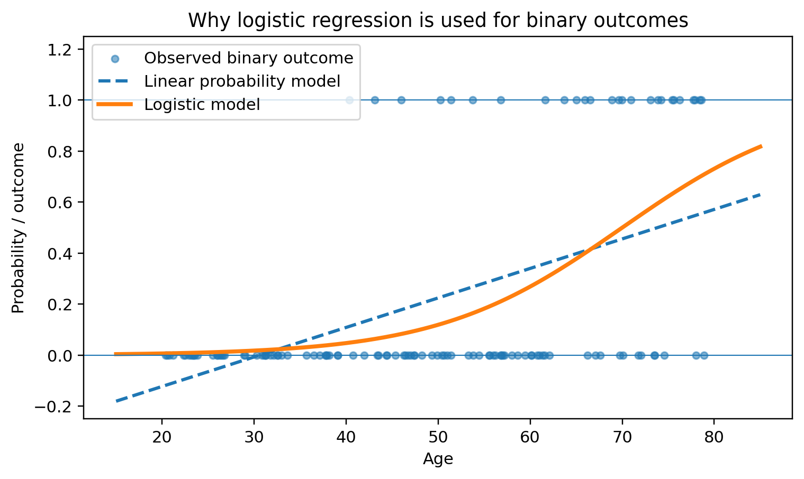
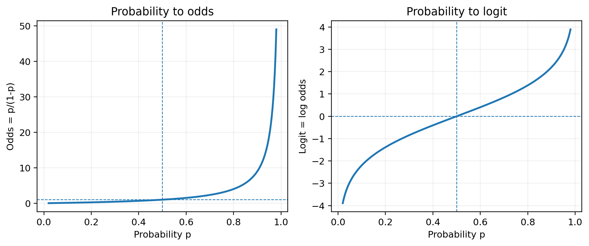
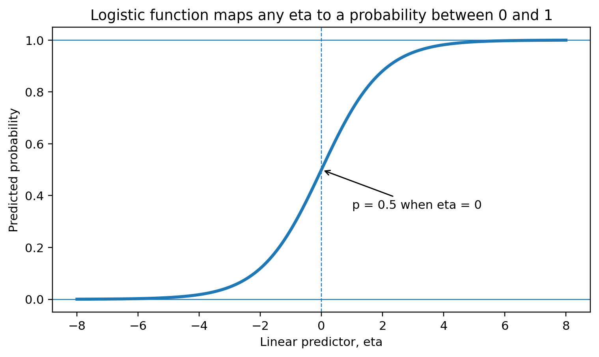
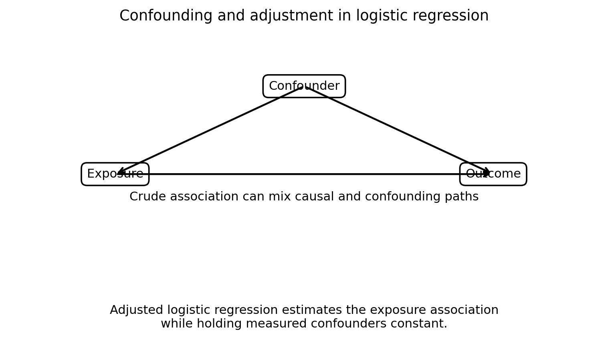
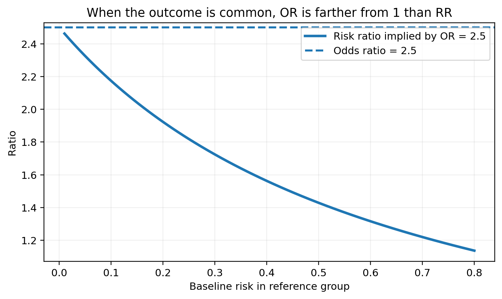
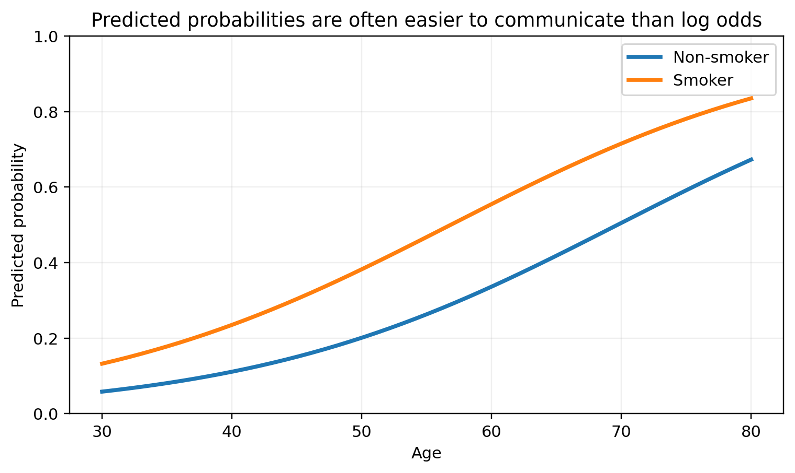
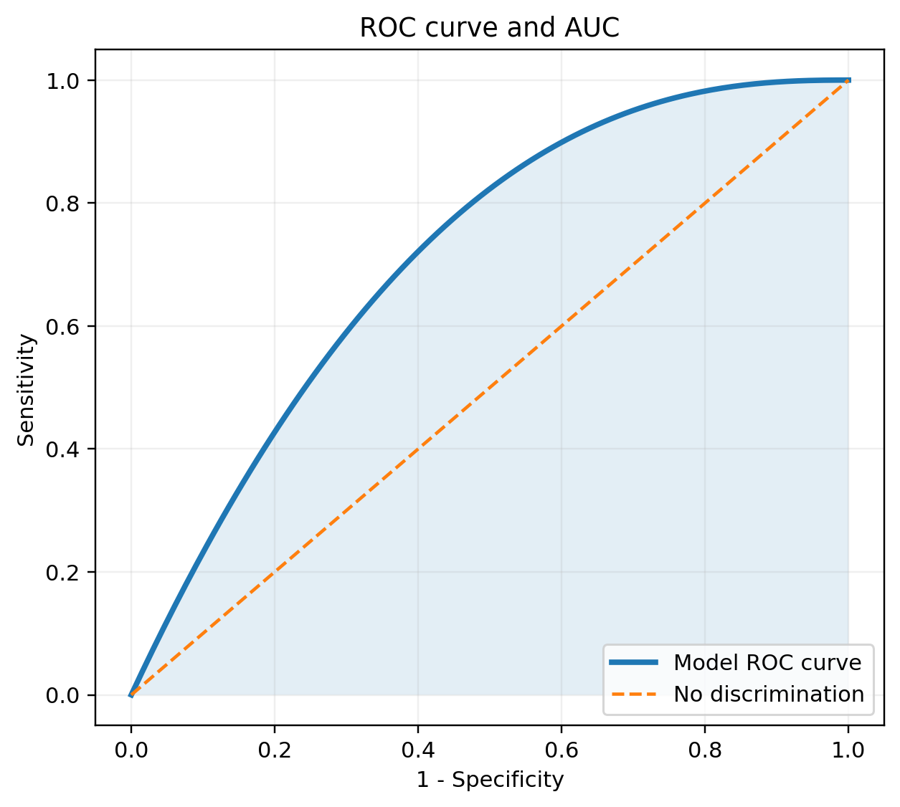
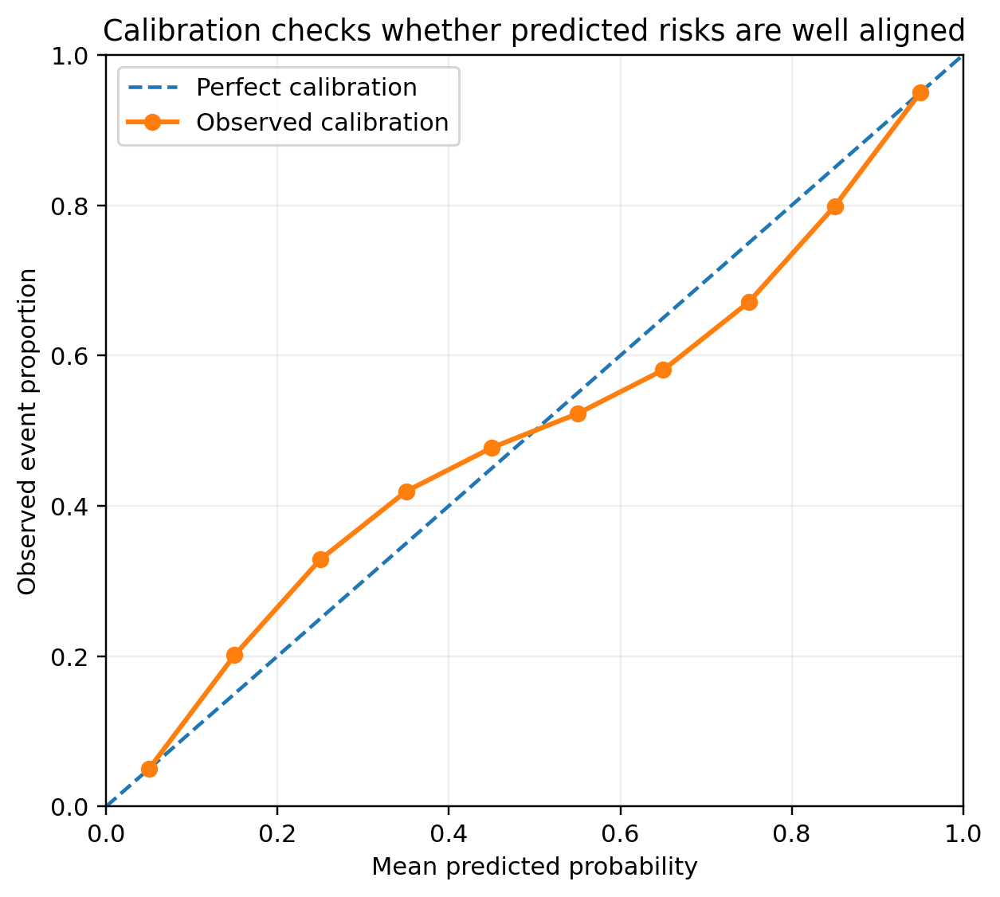
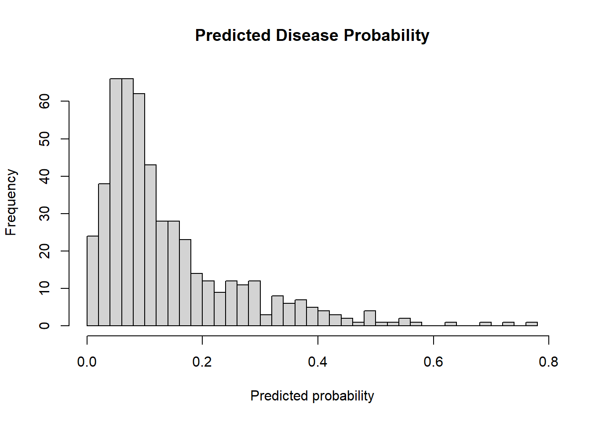
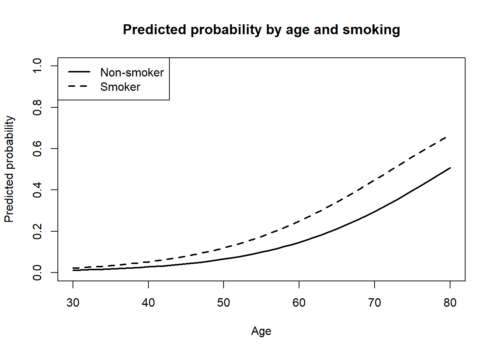

glm.fit: fitted probabilities numerically 0 or 1 occurred13 로지스틱 회귀
의학/보건 연구에서는 결과변수가 연속형이 아니라 두 가지 상태로 관찰되는 경우가 매우 많다.
예를 들어 연구 질문이 다음과 같다면 결과변수는 이진형이다.
| 연구 질문 | 결과변수 | 사건 코딩 예 |
|---|---|---|
| 흡연이 폐질환 발생과 관련이 있는가? | 폐질환 있음 / 없음 | 있음 = 1 |
| 치료 전 바이오마커가 치료 반응을 예측하는가? | 반응 / 무반응 | 반응 = 1 |
| 수술 후 30일 내 재입원이 발생하는가? | 재입원 / 비재입원 | 재입원 = 1 |
| 중환자실 환자의 사망 위험을 예측할 수 있는가? | 사망 / 생존 | 사망 = 1 |
| 선별검사 양성 여부는 어떤 요인과 관련되는가? | 양성 / 음성 | 양성 = 1 |
이처럼 결과가 0 또는 1로 표현되는 경우에는 선형회귀를 그대로 적용하기 어렵다. 로지스틱 회귀(logistic regression)는 사건 발생확률을 직접 0과 1 사이에 머물도록 하면서, 설명변수와 사건 발생 사이의 관련성을 오즈비(odds ratio)로 해석할 수 있게 해 주는 대표적인 회귀모형이다.
Note핵심 메시지
로지스틱 회귀는 이진 결과변수의 확률을 직접 선형모형으로 적합하는 것이 아니라, 확률을 log odds로 변환한 뒤 그 값을 설명변수의 선형결합으로 모델링한다. 회귀계수를 지수화하면 오즈비로 해석할 수 있다.
13.1 이진 결과변수
이진 결과변수(binary outcome)는 가능한 값이 두 가지뿐인 결과변수이다. 통계분석에서는 보통 사건이 없으면 0, 사건이 있으면 1로 코딩한다.
\[Y_i = \begin{cases} 1, & \text{사건 발생} \\ 0, & \text{사건 비발생} \end{cases}\]
예를 들어 질병 발생 여부를 분석한다면 다음과 같이 코딩할 수 있다.
| 실제 상태 | 코딩값 |
|---|---|
| 질병 없음 | 0 |
| 질병 있음 | 1 |
이때 \(Y_i\)는 베르누이 확률변수로 볼 수 있다.
\[Y_i \sim Bernoulli(p_i)\]
여기서 \(p_i\)는 i번째 대상자의 사건 발생확률이다.
\[p_i = P(Y_i = 1)\]
따라서 이진 결과변수 분석의 핵심은 각 대상자의 \(p_i\)가 설명변수에 따라 어떻게 달라지는지를 모델링하는 것이다.
13.2 이진 결과변수에 선형회귀를 쓰기 어려운 이유
선형회귀는 결과변수의 조건부 평균을 설명변수의 선형결합으로 모델링한다.
\[E(Y_i \mid X_i) = \beta_0 + \beta_1 X_i\]
이진 결과변수에서는 \(Y_i\)가 0 또는 1이므로 조건부 평균은 사건 발생확률과 같다.
\[E(Y_i \mid X_i) = P(Y_i=1 \mid X_i) = p_i\]
따라서 이진 결과변수에 선형회귀를 적용하면 사실상 다음과 같은 모형이 된다.
\[p_i = \beta_0 + \beta_1 X_i\]
이를 선형확률모형(linear probability model)이라고 부를 수 있다. 하지만 이 접근에는 중요한 문제가 있다.
13.2.1 문제 1: 예측확률이 0보다 작거나 1보다 클 수 있다
확률은 반드시 다음 범위 안에 있어야 한다.
\[0 \leq p_i \leq 1\]
그러나 선형식 \(\beta_0 + \beta_1 X_i\)는 이론적으로 \(-\infty\)부터 \(+\infty\)까지 값을 가질 수 있다. 따라서 예측확률이 -0.2 또는 1.3처럼 해석 불가능한 값이 될 수 있다.
13.2.2 문제 2: 오차항의 등분산성이 성립하기 어렵다
이진 결과변수는 베르누이 분포를 따르므로 분산은 다음과 같다.
\[Var(Y_i \mid X_i) = p_i(1-p_i)\]
이 분산은 \(p_i\)에 따라 달라진다. 즉 확률이 0.5에 가까우면 분산이 크고, 0이나 1에 가까우면 분산이 작다. 선형회귀의 기본 가정인 등분산성과 잘 맞지 않는다.
13.2.3 문제 3: 확률과 설명변수의 관계가 선형일 필요가 없다
실제 위험은 설명변수가 증가할수록 처음에는 천천히 증가하다가 중간에서 빠르게 증가하고, 확률이 1에 가까워지면 다시 완만해지는 S자 형태를 보일 수 있다. 로지스틱 회귀는 이러한 형태를 자연스럽게 표현한다.

13.3 확률, odds, log odds
로지스틱 회귀를 이해하려면 확률(probability), odds, log odds를 구분해야 한다.
13.3.1 확률
확률은 사건이 발생할 가능성이다.
\[p = P(Y=1)\]
예를 들어 어떤 질병의 발생확률이 0.20이면, 100명 중 평균적으로 약 20명에게 사건이 발생한다는 뜻이다.
13.3.2 Odds
Odds는 사건이 발생할 확률을 사건이 발생하지 않을 확률로 나눈 값이다.
\[Odds = \frac{p}{1-p}\]
예를 들어 \(p=0.20\)이면,
\[Odds = \frac{0.20}{0.80} = 0.25\]
이는 사건 발생 odds가 0.25라는 뜻이다. 말로 표현하면 “사건 발생 가능성이 사건 비발생 가능성의 0.25배”이다.
| 확률 \(p\) | 비발생확률 \(1-p\) | odds \(p/(1-p)\) | 해석 |
|---|---|---|---|
| 0.10 | 0.90 | 0.111 | 사건이 비발생보다 훨씬 드묾 |
| 0.20 | 0.80 | 0.250 | 사건 발생 odds는 0.25 |
| 0.50 | 0.50 | 1.000 | 발생과 비발생 odds가 같음 |
| 0.80 | 0.20 | 4.000 | 사건 발생 odds는 비발생의 4배 |
13.3.3 Log odds와 logit
Odds는 0보다 큰 값만 가진다. 로지스틱 회귀에서는 odds에 로그를 취한 값을 모델링한다.
\[logit(p) = \log\left(\frac{p}{1-p}\right)\]
이를 logit 변환이라고 한다. logit은 \(-\infty\)부터 \(+\infty\)까지 모든 실수값을 가질 수 있다.
| 확률 \(p\) | odds | logit\((p)\) |
|---|---|---|
| 0.10 | 0.111 | -2.197 |
| 0.20 | 0.250 | -1.386 |
| 0.50 | 1.000 | 0.000 |
| 0.80 | 4.000 | 1.386 |
| 0.90 | 9.000 | 2.197 |

13.4 로지스틱 함수와 inverse logit
로지스틱 회귀에서는 logit을 설명변수의 선형결합으로 모델링한다.
\[\eta_i = \beta_0 + \beta_1X_{1i}+\cdots+\beta_pX_{pi}\]
여기서 \(\eta_i\)를 선형예측자(linear predictor)라고 한다. 이 값은 어떤 실수값도 가질 수 있다. 그러나 우리가 최종적으로 원하는 것은 확률 \(p_i\)이다. logit 식을 확률로 되돌리면 다음과 같다.
\[p_i = \frac{e^{\eta_i}}{1+e^{\eta_i}}\]
동일하게 다음과 같이 쓸 수도 있다.
\[p_i = \frac{1}{1+e^{-\eta_i}}\]
이 함수를 로지스틱 함수(logistic function) 또는 inverse logit이라고 한다.

13.4.1 inverse logit 유도
logit 정의에서 출발하자.
\[\log\left(\frac{p}{1-p}\right)=\eta\]
양변에 지수함수를 취하면,
\[\frac{p}{1-p}=e^\eta\]
양변에 \(1-p\)를 곱하면,
\[p=e^\eta(1-p)\]
전개하면,
\[p=e^\eta-e^\eta p\]
\(p\)가 있는 항을 한쪽으로 모으면,
\[p+e^\eta p=e^\eta\]
\[p(1+e^\eta)=e^\eta\]
따라서,
\[p=\frac{e^\eta}{1+e^\eta}\]
이다. 이 식 때문에 로지스틱 회귀의 예측확률은 항상 0과 1 사이에 위치한다.
13.5 로지스틱 회귀모형
이진 결과변수 \(Y_i\)가 있다고 하자.
\[Y_i \sim Bernoulli(p_i)\]
로지스틱 회귀모형은 사건 발생확률 \(p_i\)의 logit을 설명변수들의 선형결합으로 표현한다.
\[logit(p_i) = \log\left(\frac{p_i}{1-p_i}\right) = \beta_0 + \beta_1X_{1i}+\beta_2X_{2i}+\cdots+\beta_pX_{pi}\]
여기서 각 기호의 의미는 다음과 같다.
| 기호 | 의미 |
|---|---|
| \(Y_i\) | i번째 대상자의 이진 결과변수 |
| \(p_i\) | i번째 대상자의 사건 발생확률 |
| \(X_{1i},\ldots,X_{pi}\) | 설명변수 또는 공변량 |
| \(\beta_0\) | 절편 |
| \(\beta_j\) | j번째 설명변수의 회귀계수 |
| \(e^{\beta_j}\) | j번째 설명변수의 odds ratio |
13.5.1 회귀계수와 odds ratio
로지스틱 회귀에서 \(\beta_j\)는 설명변수 \(X_j\)가 1 증가할 때 log odds가 얼마나 변하는지를 나타낸다.
\[\beta_j = \Delta \log(Odds)\]
하지만 log odds는 직관적으로 해석하기 어렵다. 따라서 회귀계수에 지수함수를 취해 odds ratio로 해석한다.
\[OR_j = e^{\beta_j}\]
13.5.2 왜 \(e^\beta\)가 OR인가?
설명변수가 하나인 모형을 생각하자.
\[logit(p) = \beta_0 + \beta_1X\]
\(X=0\)일 때 log odds는 다음과 같다.
\[\log(Odds_0)=\beta_0\]
\(X=1\)일 때 log odds는 다음과 같다.
\[\log(Odds_1)=\beta_0+\beta_1\]
두 log odds의 차이는,
\[\log(Odds_1)-\log(Odds_0)=\beta_1\]
로그의 성질을 이용하면,
\[\log\left(\frac{Odds_1}{Odds_0}\right)=\beta_1\]
양변에 지수함수를 취하면,
\[\frac{Odds_1}{Odds_0}=e^{\beta_1}\]
따라서 \(e^{\beta_1}\)은 두 집단의 odds ratio이다.
13.5.3 설명변수 유형별 OR 해석
13.5.3.1 이진 설명변수
흡연 여부를 설명변수로 하는 모형을 생각하자.
\[logit(p_i)=\beta_0+\beta_1Smoking_i\]
여기서 \(Smoking=0\)은 비흡연자, \(Smoking=1\)은 흡연자라고 하자. 이때 \(e^{\beta_1}\)은 흡연자의 사건 발생 odds가 비흡연자에 비해 몇 배인지를 나타낸다.
예를 들어 \(e^{\beta_1}=2.10\)이면 다음과 같이 해석한다.
흡연자의 질병 발생 odds는 비흡연자에 비해 2.10배 높다.
13.5.3.2 연속형 설명변수
나이를 설명변수로 하는 모형을 생각하자.
\[logit(p_i)=\beta_0+\beta_1Age_i\]
이때 \(e^{\beta_1}\)은 나이가 1세 증가할 때 사건 발생 odds가 몇 배가 되는지를 나타낸다.
예를 들어 \(e^{\beta_1}=1.05\)이면 다음과 같이 해석한다.
나이가 1세 증가할 때 질병 발생 odds는 1.05배, 즉 약 5% 증가한다.
만약 10세 증가에 대한 OR을 보고 싶다면 다음과 같이 계산한다.
\[OR_{10\text{ years}} = e^{10\beta_1}\]
예를 들어 1세 증가 OR이 1.05라면 10세 증가 OR은 다음과 같다.
\[1.05^{10} \approx 1.63\]
즉 나이가 10세 증가할 때 odds는 약 1.63배가 된다.
13.5.3.3 범주형 설명변수
혈액형, 병기, 치료군처럼 범주가 여러 개인 변수는 기준범주(reference category)를 정하고 더미변수로 모형에 포함한다.
예를 들어 병기를 I, II, III으로 구분하고 I을 기준범주로 설정하면 다음과 같이 해석한다.
| 변수 | OR | 해석 |
|---|---|---|
| Stage II vs I | 1.80 | 병기 II의 odds는 병기 I에 비해 1.80배 |
| Stage III vs I | 3.20 | 병기 III의 odds는 병기 I에 비해 3.20배 |
기준범주가 무엇인지 확인하지 않으면 OR 해석이 완전히 달라질 수 있다.
13.6 Crude OR과 adjusted OR
13.6.1 Crude OR
Crude OR은 관심 노출변수 하나만 포함하거나 2×2 표에서 계산한 조정하지 않은 오즈비이다.
\[logit(p_i)=\beta_0+\beta_1Exposure_i\]
이때 \(e^{\beta_1}\)은 crude OR이다.
13.6.2 Adjusted OR
Adjusted OR은 나이, 성별, BMI, 동반질환 등 다른 변수를 함께 모형에 넣어 조정한 후의 오즈비이다.
\[logit(p_i)=\beta_0+\beta_1Exposure_i+\beta_2Age_i+\beta_3BMI_i+\beta_4Sex_i\]
이때 \(e^{\beta_1}\)은 나이, BMI, 성별을 조정한 후의 exposure에 대한 adjusted OR이다.
ImportantAdjusted OR 해석의 핵심
Adjusted OR은 “다른 변수가 같은 사람들끼리 비교했을 때”의 odds ratio로 해석한다. 예를 들어 흡연의 adjusted OR은 나이, BMI, 성별이 같은 사람들 사이에서 흡연자와 비흡연자의 사건 발생 odds를 비교한 것이다.

13.7 OR과 RR의 차이
오즈비(OR)는 위험비(RR)와 다르다.
위험비는 두 집단의 사건 발생확률을 비교한다.
\[RR=\frac{p_1}{p_0}\]
오즈비는 두 집단의 odds를 비교한다.
\[OR=\frac{p_1/(1-p_1)}{p_0/(1-p_0)}\]
13.7.1 사건이 드문 경우
사건 발생확률이 매우 작으면 \(1-p \approx 1\)이므로 odds는 확률과 비슷해진다.
\[Odds=\frac{p}{1-p}\approx p\]
따라서 사건이 드문 경우에는 OR이 RR과 비슷하다.
13.7.2 사건이 흔한 경우
사건이 흔하면 odds와 probability의 차이가 커진다. 이때 OR은 RR보다 1에서 더 멀리 떨어지는 경향이 있다.
예를 들어 기준군 위험이 0.40이고 노출군 위험이 0.60이면,
\[RR=\frac{0.60}{0.40}=1.50\]
하지만 OR은 다음과 같다.
\[OR=\frac{0.60/0.40}{0.40/0.60}=\frac{1.50}{0.667}=2.25\]
같은 자료에서도 OR은 2.25, RR은 1.50이다. 따라서 OR=2.25를 “위험이 2.25배”라고 말하면 과장된 해석이 될 수 있다.

13.8 로지스틱 회귀의 추정: 최대우도법 개요
선형회귀에서는 잔차제곱합을 최소화하는 최소제곱법을 사용했다. 로지스틱 회귀에서는 결과변수가 0 또는 1이므로 일반적으로 최대우도법(maximum likelihood estimation, MLE)을 사용한다.
각 대상자의 사건 발생확률이 \(p_i\)라고 하자. 실제 관찰값 \(Y_i\)는 0 또는 1이다. 베르누이 분포의 확률질량함수는 다음과 같이 쓸 수 있다.
\[P(Y_i=y_i)=p_i^{y_i}(1-p_i)^{1-y_i}\]
전체 자료가 독립이라고 가정하면 우도는 각 대상자의 확률을 곱한 값이다.
\[L(\beta)=\prod_{i=1}^{n}p_i^{y_i}(1-p_i)^{1-y_i}\]
로그우도는 다음과 같다.
\[\ell(\beta)=\sum_{i=1}^{n}\left[y_i\log(p_i)+(1-y_i)\log(1-p_i)\right]\]
로지스틱 회귀는 이 로그우도를 가장 크게 만드는 \(\beta\)를 찾는다. 즉 관찰된 0/1 결과가 가장 그럴듯하게 나타나도록 회귀계수를 추정한다.
13.9 회귀계수의 신뢰구간과 가설검정
로지스틱 회귀에서 회귀계수 \(\hat\beta_j\)의 표준오차를 \(SE(\hat\beta_j)\)라고 하자. Wald 방식의 95% 신뢰구간은 log odds scale에서 다음과 같다.
\[\hat\beta_j \pm 1.96SE(\hat\beta_j)\]
이를 OR scale로 바꾸려면 양 끝값을 지수화한다.
\[\left( \exp(\hat\beta_j-1.96SE), \exp(\hat\beta_j+1.96SE) \right)\]
가설검정은 보통 다음 귀무가설을 검정한다.
\[H_0: \beta_j=0\]
이는 OR scale에서는 다음과 같다.
\[H_0: OR_j=1\]
따라서 95% 신뢰구간이 1을 포함하지 않으면 보통 유의수준 0.05에서 통계적으로 유의하다고 해석할 수 있다.
13.10 예측확률
로지스틱 회귀의 장점 중 하나는 각 대상자의 사건 발생확률을 예측할 수 있다는 점이다.
선형예측자를 다음과 같이 계산한다.
\[\eta_i=\beta_0+\beta_1X_{1i}+\cdots+\beta_pX_{pi}\]
그 다음 inverse logit을 적용한다.
\[\hat p_i=\frac{e^{\eta_i}}{1+e^{\eta_i}}\]
예를 들어 다음 모형을 생각하자.
\[logit(p)=-8+0.06Age+0.10BMI+0.80Smoking\]
60세, BMI 28, 흡연자인 사람의 선형예측자는 다음과 같다.
\[\eta=-8+0.06(60)+0.10(28)+0.80(1)\]
\[\eta=-8+3.6+2.8+0.8=-0.8\]
예측확률은 다음과 같다.
\[p=\frac{e^{-0.8}}{1+e^{-0.8}}\approx 0.31\]
즉 이 대상자의 예측 사건 발생확률은 약 31%이다.

13.11 상호작용이 있는 로지스틱 회귀
로지스틱 회귀에서도 상호작용을 포함할 수 있다. 예를 들어 흡연의 효과가 성별에 따라 다를 수 있다고 생각해 보자.
\[logit(p_i)=\beta_0+\beta_1Smoking_i+\beta_2Female_i+\beta_3(Smoking_i\times Female_i)\]
이 모형에서 흡연의 log odds 효과는 성별에 따라 달라진다.
남성(\(Female=0\))에서 흡연의 log odds 효과는 다음과 같다.
\[\beta_1\]
여성(\(Female=1\))에서 흡연의 log odds 효과는 다음과 같다.
\[\beta_1+\beta_3\]
따라서 남성에서 흡연 OR은 \(e^{\beta_1}\)이고, 여성에서 흡연 OR은 \(e^{\beta_1+\beta_3}\)이다.
상호작용이 있는 경우에는 단일 OR 하나만 보고 전체 집단에 동일한 효과가 있다고 해석하면 안 된다.
13.12 로지스틱 회귀의 가정과 확인사항
로지스틱 회귀는 선형회귀와 다른 가정을 가진다. 중요한 확인사항은 다음과 같다.
| 확인사항 | 설명 | 점검 방법 |
|---|---|---|
| 이진 결과변수 | 결과가 0/1로 정의되어야 함 | 사건 코딩 확인 |
| 독립성 | 각 관측값이 독립이어야 함 | 연구설계 확인 |
| logit 선형성 | 연속형 설명변수와 log odds의 관계가 선형 | spline, 구간화, 진단그림 |
| 다중공선성 | 설명변수끼리 너무 강하게 관련되면 불안정 | VIF 확인 |
| 충분한 사건 수 | 사건 수가 너무 적으면 추정 불안정 | 사건 수와 변수 수 확인 |
| 완전분리 | 어떤 변수 조합이 결과를 완벽히 예측하면 추정 실패 | 경고 메시지, 큰 표준오차 |
| 영향점 | 특정 관측값이 추정에 과도한 영향 | 진단통계량 확인 |
13.12.1 Logit 선형성
로지스틱 회귀는 확률 \(p\)와 연속형 설명변수 사이의 선형성을 가정하지 않는다. 대신 logit(p)와 연속형 설명변수 사이의 선형성을 가정한다.
즉 다음 관계가 적절해야 한다.
\[logit(p)=\beta_0+\beta_1X\]
나이와 위험의 관계가 비선형이라면 나이를 그대로 선형항으로 넣는 것이 부적절할 수 있다. 이 경우 다음 대안을 고려할 수 있다.
- 나이를 범주화한다.
- \(Age^2\) 같은 다항항을 추가한다.
- restricted cubic spline을 사용한다.
- 임상적으로 의미 있는 절단값을 사용한다.
13.12.2 완전분리
완전분리(complete separation)는 어떤 설명변수 또는 설명변수 조합이 결과를 완벽하게 구분하는 상황이다.
예를 들어 작은 자료에서 특정 유전자 변이가 있는 사람은 모두 질병이 있고, 없는 사람은 모두 질병이 없다면 로지스틱 회귀계수가 무한대로 발산할 수 있다. R에서는 다음과 같은 경고가 나타날 수 있다.
이 경우 표준 로지스틱 회귀 결과를 그대로 해석하기 어렵고, Firth 보정 로지스틱 회귀나 penalized logistic regression 등을 고려할 수 있다.
13.13 사건 수와 변수 개수
로지스틱 회귀에서는 사건 수가 충분해야 한다. 과거에는 “변수 1개당 사건 수 10개(events per variable, EPV 10)”라는 경험적 기준이 널리 사용되었다.
예를 들어 사건 수가 50개라면 설명변수는 대략 5개 이하가 적절하다는 식이다. 하지만 이는 절대 규칙이 아니다. 실제 필요한 사건 수는 다음에 따라 달라진다.
- 전체 표본 크기
- 사건 비율
- 설명변수 수
- 설명변수의 분포
- 효과크기
- 예측모형인지 설명모형인지
- 변수 선택을 하는지 여부
- 상호작용항 포함 여부
중요한 원칙은 다음과 같다.
사건 수가 적은데 너무 많은 변수를 넣으면 모형은 자료에 과적합되고, OR 추정치와 예측확률이 불안정해질 수 있다.
13.14 예측모형 평가: discrimination과 calibration
로지스틱 회귀는 관련성 분석에도 쓰이지만 예측모형으로도 자주 사용된다. 예측모형으로 사용할 때는 최소한 두 가지 성능을 구분해야 한다.
13.14.1 Discrimination
Discrimination은 사건이 발생한 사람과 발생하지 않은 사람을 모형이 얼마나 잘 구분하는지를 의미한다. 대표적인 지표가 ROC curve와 AUC이다.
ROC curve는 여러 예측확률 절단값에서 민감도와 1-특이도를 그린 곡선이다.
- x축: \(1-\text{specificity}\)
- y축: sensitivity
AUC는 ROC curve 아래 면적이다.
| AUC | 대략적 해석 |
|---|---|
| 0.5 | 무작위 예측 수준 |
| 0.6–0.7 | 낮은 구분능 |
| 0.7–0.8 | 보통 구분능 |
| 0.8–0.9 | 좋은 구분능 |
| 0.9 이상 | 매우 높은 구분능 |

13.14.2 Calibration
Calibration은 예측확률이 실제 사건 발생률과 얼마나 잘 맞는지를 의미한다.
예를 들어 어떤 모형이 여러 환자에게 20% 위험을 예측했다면, 그 환자들 중 실제로 약 20%에서 사건이 발생해야 잘 보정된 모형이라고 할 수 있다.
AUC가 높다고 calibration이 반드시 좋은 것은 아니다. 예측모형을 사용할 때는 구분능과 보정도를 함께 평가해야 한다.

13.15 R 실습
이번 실습에서는 가상 의학 자료를 생성하여 로지스틱 회귀분석을 수행한다. 결과변수는 질병 발생 여부이며, 설명변수는 나이, BMI, 흡연, 성별이다.
13.15.1 예제 데이터 생성
set.seed(123)
n <- 500
age <- rnorm(n, mean = 55, sd = 10)
bmi <- rnorm(n, mean = 25, sd = 4)
smoking <- rbinom(n, size = 1, prob = 0.3)
female <- rbinom(n, size = 1, prob = 0.5)
linear_predictor <- -8 +
0.06 * age +
0.10 * bmi +
0.80 * smoking -
0.20 * female
prob_disease <- exp(linear_predictor) / (1 + exp(linear_predictor))
disease <- rbinom(n, size = 1, prob = prob_disease)
data <- data.frame(
disease = disease,
age = age,
bmi = bmi,
smoking = smoking,
female = female
)
head(data) disease age bmi smoking female
1 0 49.39524 22.59243 0 1
2 0 52.69823 21.02521 0 1
3 0 70.58708 29.10714 0 1
4 0 55.70508 28.00425 0 0
5 0 56.29288 18.96333 0 1
6 0 72.15065 24.61941 0 013.15.2 사건 발생률 확인
table(data$disease)
0 1
430 70 prop.table(table(data$disease))
0 1
0.86 0.14 사건 발생률은 로지스틱 회귀 해석에서 중요하다. 사건이 매우 흔하면 OR과 RR의 차이가 커질 수 있고, 사건이 너무 적으면 모형 추정이 불안정할 수 있다.
13.15.3 2×2 표와 crude OR
먼저 흡연과 질병 발생의 관계를 2×2 표로 확인한다.
tab_smoking <- table(
Smoking = data$smoking,
Disease = data$disease
)
tab_smoking Disease
Smoking 0 1
0 314 39
1 116 31prop.table(tab_smoking, margin = 1) Disease
Smoking 0 1
0 0.8895184 0.1104816
1 0.7891156 0.21088442×2 표에서 직접 crude OR을 계산할 수도 있다.
a <- tab_smoking["1", "1"]
b <- tab_smoking["1", "0"]
c <- tab_smoking["0", "1"]
d <- tab_smoking["0", "0"]
crude_or_table <- (a / b) / (c / d)
crude_or_table[1] 2.15163613.15.4 단변량 로지스틱 회귀
model_smoking <- glm(
disease ~ smoking,
data = data,
family = binomial
)
summary(model_smoking)
Call:
glm(formula = disease ~ smoking, family = binomial, data = data)
Coefficients:
Estimate Std. Error z value Pr(>|z|)
(Intercept) -2.0858 0.1698 -12.286 < 2e-16 ***
smoking 0.7662 0.2640 2.902 0.00371 **
---
Signif. codes: 0 '***' 0.001 '**' 0.01 '*' 0.05 '.' 0.1 ' ' 1
(Dispersion parameter for binomial family taken to be 1)
Null deviance: 404.96 on 499 degrees of freedom
Residual deviance: 396.80 on 498 degrees of freedom
AIC: 400.8
Number of Fisher Scoring iterations: 4회귀계수는 log odds scale에 있다. OR로 해석하려면 지수화한다.
exp(coef(model_smoking))(Intercept) smoking
0.1242038 2.1516357 95% 신뢰구간도 지수화하여 OR scale로 바꾼다.
exp(confint(model_smoking)) 2.5 % 97.5 %
(Intercept) 0.08769083 0.1709195
smoking 1.27643296 3.605424813.15.5 다변량 로지스틱 회귀
model_multi <- glm(
disease ~ smoking + age + bmi + female,
data = data,
family = binomial
)
summary(model_multi)
Call:
glm(formula = disease ~ smoking + age + bmi + female, family = binomial,
data = data)
Coefficients:
Estimate Std. Error z value Pr(>|z|)
(Intercept) -9.61563 1.36048 -7.068 1.57e-12 ***
smoking 0.65920 0.28311 2.328 0.01989 *
age 0.08949 0.01532 5.840 5.22e-09 ***
bmi 0.09565 0.03434 2.785 0.00535 **
female -0.12477 0.27781 -0.449 0.65334
---
Signif. codes: 0 '***' 0.001 '**' 0.01 '*' 0.05 '.' 0.1 ' ' 1
(Dispersion parameter for binomial family taken to be 1)
Null deviance: 404.96 on 499 degrees of freedom
Residual deviance: 351.53 on 495 degrees of freedom
AIC: 361.53
Number of Fisher Scoring iterations: 513.15.6 Adjusted OR 결과표 만들기
or <- exp(coef(model_multi))
ci <- exp(confint(model_multi))
p_value <- summary(model_multi)$coefficients[, 4]
result_table <- data.frame(
Variable = names(or),
OR = round(or, 3),
CI_lower = round(ci[, 1], 3),
CI_upper = round(ci[, 2], 3),
p_value = signif(p_value, 3),
row.names = NULL
)
result_table Variable OR CI_lower CI_upper p_value
1 (Intercept) 0.000 0.000 0.001 1.57e-12
2 smoking 1.933 1.104 3.362 1.99e-02
3 age 1.094 1.062 1.128 5.22e-09
4 bmi 1.100 1.030 1.178 5.35e-03
5 female 0.883 0.510 1.522 6.53e-0113.15.7 10세 증가에 대한 나이 OR 계산
나이의 회귀계수는 1세 증가에 대한 log OR이다. 10세 증가에 대한 OR은 다음과 같이 계산한다.
beta_age <- coef(model_multi)["age"]
exp(10 * beta_age) age
2.447093 13.15.8 예측확률 계산
new_patient <- data.frame(
smoking = 1,
age = 60,
bmi = 28,
female = 0
)
predict(
model_multi,
newdata = new_patient,
type = "response"
) 1
0.287258 type = "response"를 사용하면 logit scale이 아니라 예측확률이 출력된다.
13.15.9 여러 환자 프로파일의 예측확률 비교
new_profiles <- data.frame(
smoking = c(0, 1, 0, 1),
age = c(50, 50, 70, 70),
bmi = c(24, 24, 30, 30),
female = c(0, 0, 0, 0)
)
new_profiles$predicted_probability <- predict(
model_multi,
newdata = new_profiles,
type = "response"
)
new_profiles smoking age bmi female predicted_probability
1 0 50 24 0 0.05491673
2 1 50 24 0 0.10099187
3 0 70 30 0 0.38184267
4 1 70 30 0 0.5442510413.15.10 예측확률 분포
data$predicted_prob <- predict(
model_multi,
type = "response"
)
hist(
data$predicted_prob,
breaks = 30,
main = "Predicted Disease Probability",
xlab = "Predicted probability"
)
13.15.11 예측확률 곡선 그리기
age_grid <- seq(30, 80, by = 1)
plot_data <- data.frame(
age = rep(age_grid, 2),
bmi = 26,
female = 0,
smoking = rep(c(0, 1), each = length(age_grid))
)
plot_data$pred <- predict(
model_multi,
newdata = plot_data,
type = "response"
)
plot(
age_grid,
plot_data$pred[plot_data$smoking == 0],
type = "l",
lwd = 2,
ylim = c(0, 1),
xlab = "Age",
ylab = "Predicted probability",
main = "Predicted probability by age and smoking"
)
lines(
age_grid,
plot_data$pred[plot_data$smoking == 1],
lwd = 2,
lty = 2
)
legend(
"topleft",
legend = c("Non-smoker", "Smoker"),
lwd = 2,
lty = c(1, 2)
)
13.15.12 범주형 변수 factor 처리
흡연 여부를 factor로 바꾸면 결과표에서 기준범주가 더 명확해진다.
data$smoking_factor <- factor(
data$smoking,
levels = c(0, 1),
labels = c("Non-smoker", "Smoker")
)
data$female_factor <- factor(
data$female,
levels = c(0, 1),
labels = c("Male", "Female")
)
model_factor <- glm(
disease ~ smoking_factor + age + bmi + female_factor,
data = data,
family = binomial
)
summary(model_factor)
Call:
glm(formula = disease ~ smoking_factor + age + bmi + female_factor,
family = binomial, data = data)
Coefficients:
Estimate Std. Error z value Pr(>|z|)
(Intercept) -9.61563 1.36048 -7.068 1.57e-12 ***
smoking_factorSmoker 0.65920 0.28311 2.328 0.01989 *
age 0.08949 0.01532 5.840 5.22e-09 ***
bmi 0.09565 0.03434 2.785 0.00535 **
female_factorFemale -0.12477 0.27781 -0.449 0.65334
---
Signif. codes: 0 '***' 0.001 '**' 0.01 '*' 0.05 '.' 0.1 ' ' 1
(Dispersion parameter for binomial family taken to be 1)
Null deviance: 404.96 on 499 degrees of freedom
Residual deviance: 351.53 on 495 degrees of freedom
AIC: 361.53
Number of Fisher Scoring iterations: 5exp(coef(model_factor)) (Intercept) smoking_factorSmoker age
6.667808e-05 1.933251e+00 1.093617e+00
bmi female_factorFemale
1.100377e+00 8.827006e-01 13.15.13 상호작용 모형
흡연 효과가 성별에 따라 다른지 확인하려면 상호작용항을 포함한다.
model_interaction <- glm(
disease ~ smoking * female + age + bmi,
data = data,
family = binomial
)
summary(model_interaction)
Call:
glm(formula = disease ~ smoking * female + age + bmi, family = binomial,
data = data)
Coefficients:
Estimate Std. Error z value Pr(>|z|)
(Intercept) -9.57609 1.36273 -7.027 2.11e-12 ***
smoking 0.41513 0.42137 0.985 0.32453
female -0.30449 0.35986 -0.846 0.39749
age 0.09010 0.01536 5.866 4.48e-09 ***
bmi 0.09582 0.03435 2.789 0.00528 **
smoking:female 0.45532 0.57370 0.794 0.42739
---
Signif. codes: 0 '***' 0.001 '**' 0.01 '*' 0.05 '.' 0.1 ' ' 1
(Dispersion parameter for binomial family taken to be 1)
Null deviance: 404.96 on 499 degrees of freedom
Residual deviance: 350.90 on 494 degrees of freedom
AIC: 362.9
Number of Fisher Scoring iterations: 5exp(coef(model_interaction)) (Intercept) smoking female age bmi
6.936746e-05 1.514571e+00 7.375026e-01 1.094285e+00 1.100565e+00
smoking:female
1.576684e+00 상호작용항이 포함된 모형에서는 주효과 OR을 단순하게 전체 평균 효과로 해석하면 안 된다. 기준범주에서의 효과와 상호작용에 따른 효과 변화를 함께 해석해야 한다.
13.15.14 ROC curve와 AUC
아래 코드는 pROC 패키지가 설치되어 있을 때 실행한다.
install.packages("pROC")
library(pROC)
roc_obj <- roc(data$disease, data$predicted_prob)
plot(roc_obj)
auc(roc_obj)패키지 설치가 어려운 수업 환경에서는 ROC curve와 AUC 개념을 그림으로 설명하고, 코드는 참고용으로 제시해도 된다.
13.15.15 Confusion matrix와 threshold
예측확률을 이용하여 분류를 하려면 절단값(threshold)을 정해야 한다. 예를 들어 0.5 이상이면 질병 예측 양성으로 분류할 수 있다.
threshold <- 0.5
pred_class <- ifelse(data$predicted_prob >= threshold, 1, 0)
table(
Predicted = pred_class,
Observed = data$disease
) Observed
Predicted 0 1
0 425 66
1 5 4절단값을 바꾸면 민감도와 특이도가 달라진다. 따라서 threshold는 연구 목적, 질병의 중증도, 위양성·위음성 비용을 고려하여 정해야 한다.